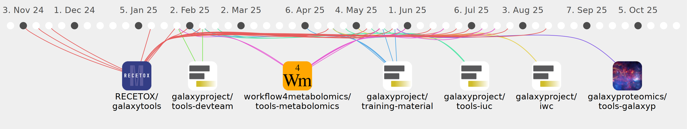

hechth

Commits all-time: 1043
Commits last year: 295

(181)
- 78b2697
- 239a81b
- 6818978
- cd94077
- 846c741
- fbab99d
- 02c7acb
- cf91360
- ab410f5
- 66ad3db
- 6a7c715
- d8f67a0
- 870d692
- 7189f9b
- 28427a7
- a4506a1
- 56451f5
- 384b9f2
- 92ba602
- d0c5f36
- ad8721c
- 975d4c9
- 67c79e4
- 9ba6c30
- 798b71a
- d6102c6
- 54d8907
- 5d71152
- ed43aac
- a1009ac
- d6ee2f1
- 41caf13
- 0765a69
- 146effa
- 5465e87
- fc306f0
- 2d6ea01
- 9c34bdc
- 251dc7e
- 8174abc
- 64b61ff
- 3f6328c
- 39dba81
- 90411a3
- 60ec726
- fd29a68
- bbcbf9c
- 35dd56b
- a34ad18
- 2c2fac2
- 48dbee0
- e358068
- 1a9571c
- f68ce95
- 187cd20
- 2a4935d
- 3e6ac08
- e5a33ef
- 148c6b0
- 7bc0aee
- 1a6d937
- 1c68c64
- c1eccb0
- 41c71f0
- 7fc7b0d
- c4f3114
- fd7354a
- 631a004
- 5fbd1c4
- a66a5e5
- e65821f
- ea89d03
- a76c6d0
- c363e2b
- bba6797
- 31c68d6
- 3fedab8
- 9448913
- 325b4bc
- 7f1c93a
- 031d8ff
- 157b03e
- c562be4
- 34d81a2
- 28f3d51
- 7f58692
- 515433e
- f2db131
- e9e2090
- 9d29d1c
- f1e66ef
- 6057112
- ad66a69
- 8233a27
- ff62507
- 00ad623
- 48c78e7
- 841c11b
- e130fee
- b224b49
- 7214696
- fc20f29
- 1686255
- 6707579
- a99bc58
- ec9a9fa
- dd69d0a
- 11eae46
- bd80a81
- e2bab07
- f5c0a33
- 1fe1ed7
- aec9055
- 31be0e8
- d9a78a5
- 2f57f51
- 2b8b1dc
- 0db9b13
- 5a47354
- 9f39ba8
- 9e8dabb
- 99dee7a
- 39fbc64
- d7d5da3
- 108d589
- 3d6bab6
- 72efced
- 202a898
- 571b64a
- f7ed9d2
- 0d979c0
- 65b8a1d
- 34dcd40
- 4a1d9a7
- e33d983
- 8e55a5e
- ae67ca9
- e09696a
- 36639f7
- 41deaf6
- 9104225
- 0de754d
- a8efad3
- d1edf00
- 059a7f5
- ff9dd02
- aa7f7be
- 09c60fd
- 261efd9
- a57d984
- da1e25b
- 2291d31
- e900839
- a17953e
- 01a6a24
- 9d464ba
- d7486ef
- 059cad0
- 91d32d5
- 3d76897
- eb9b95a
- af4bb1b
- 96a473c
- ad0d51a
- 4bde33a
- 9636e13
- b0dbdbf
- 6ae10dd
- 39b0cb4
- a24ef38
- 58f9a97
- 2bc0616
- b853552
- e8bcefd
- df42dba
- 8024861
- 5c25515
- 4164b4f
- bd931af
- 89e8b3b
- 1399684
(41)
- b751410
- cd451d3
- 4ca3dba
- 3cd3477
- c3728b1
- 64da7ff
- a3e8ca8
- b8bc93a
- 4aa031e
- 06a28ca
- 803cc25
- 8ae35b5
- 19e7eb6
- 256abc0
- 8bdad97
- 28106ea
- beed81c
- c42720e
- 840a535
- 5faa948
- 14d22ea
- ccbc389
- 3ef250a
- ed0533b
- caee839
- 4285ae0
- 1b641e0
- 2f0b447
- 78aaf01
- 08a700d
- adae87c
- 104bad0
- 8fa20a0
- d7e326e
- bed1e4e
- c933ea0
- 78cbeac
- 3d25fc8
- 90ebd19
- 3d32800
- cd7536e
(39)
- a194f2b
- d44944e
- b9ab270
- 1818210
- 1f7edcc
- c5c444b
- f492bba
- 19f9453
- 277adf0
- 1b23bdb
- 7765522
- d7ad2de
- 703f38f
- b4ccc09
- 3fc9d2a
- dcee083
- 23028b8
- 5a3fbd0
- 01a3dea
- 303ac4c
- b4b83ee
- 5a45552
- aa760d5
- 06894cc
- 1a44f12
- 8d7341d
- 8860493
- 3b258cc
- 177b433
- 7b1a7c5
- f2949b8
- 754db3f
- caac40b
- bd7cd92
- aae4eae
- 0b444fe
- 13133b4
- 744a36e
- fd8221d
(25)
(8)
(1)